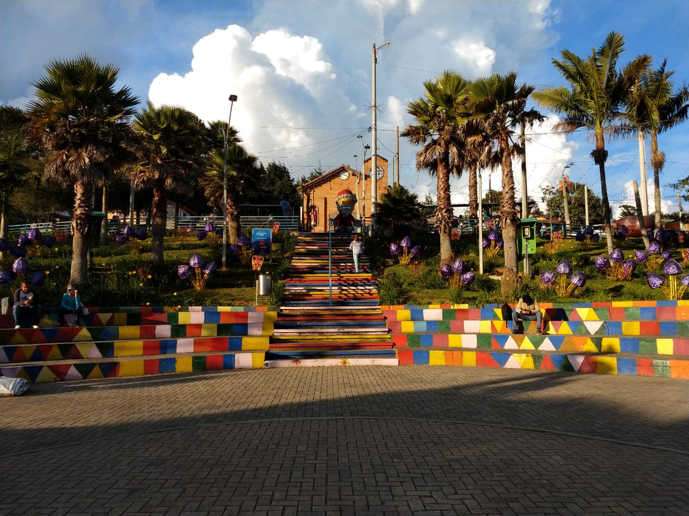

Escoge tu destino!
CONCEPCIÓN

Concepción es un municipio de Colombia, localizado en la subregión Oriente del departamento de Antioquia. Limita por el norte con los municipios de Barbosa y Santo Domingo, por el este con los municipios de Santo Domingo y Alejandría, por el Sur con los municipios de El Peñol y San Vicente Ferrer, y por el oeste con los municipios de San Vicente y Barbosa. Su cabecera dista 75 kilómetros de la ciudad de Medellín, capital del departamento de Antioquia. El municipio posee una extensión de 167 kilómetros cuadrados.
JARDÍN
Jardín es una localidad andina del noroeste de Colombia, conocida por sus casas de colores brillantes, las exhibiciones florales coloridas y los dulces de leche. La plaza principal, Parque El Libertador, tiene rosaledas, una fuente central y la Basílica de la Inmaculada Concepción, de estilo neogótico y con torres gemelas y vista desde su campanario. La Casa Museo Clara Rojas Peláez ofrece arte, antigüedades y una biblioteca en un edificio colonial.
SANTA ELENA
Santa Elena es sin duda el corregimiento de mayor visibilidad y reconocimiento cultural y turístico. Las razones para ello están relacionadas con su pasado lleno de tradición, la cultura silletera y su riqueza paisajística y de naturaleza. Está ubicado al oriente de la ciudad y es uno de los cinco corregimientos que conforman el área rural del Municipio de Medellín. Se constituye como tal en el año 1987 a partir de la aprobación del Acuerdo 54 del Concejo de Medellín. Con el Decreto 346 de 2000, se ajustó la división político administrativa de Medellín.